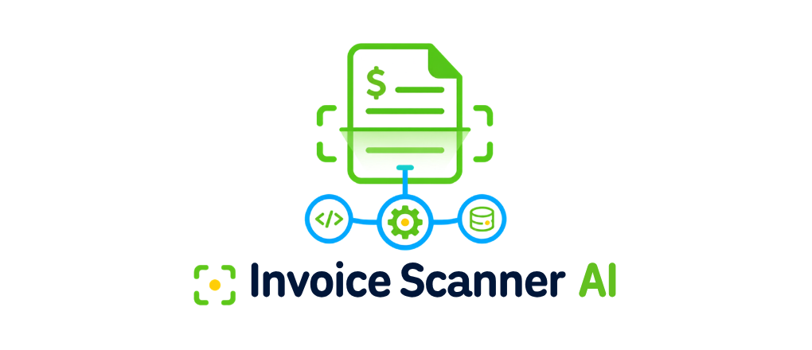

Headless service · no UI by design
A document goes in. Structured data comes out. Four services that never talk to a screen.
There's no front end here. The project exists to practice the shape of a production system, not to be looked at. So this page does the one thing a screenshot can't: it follows a single invoice through the pipeline, one hop at a time, and shows what each service hands to the next.
A mock upload, northwind-INV-2024-0912.png, followed end to end. Timings are typical for a local run.
:8000, the only public surface. Validates the file, then orchestrates the three internal calls.
:8001. PaddleOCR reads the pixels. Returns raw text, a confidence score, and page count.
:8002. A local Llama 2 model turns the loose text into JSON that matches the shared schema. The response is parsed and validated before it leaves.
:8003. Writes the invoice and its line items through SQLAlchemy, returns the new id. The gateway then answers the original caller.
Five processes. One public port. Each service owns its dependencies and can fail without taking the others down.
Everything the outside world can call. All through the gateway on :8000.
| Route | Does | Returns |
|---|---|---|
POST/upload |
Send an invoice file. Runs the full OCR → LLM → storage pipeline. | invoice id + extracted fields + line items |
GET/status/{id} |
Look up one processed invoice. | vendor, date, total, status |
GET/invoices |
List everything filed so far. | array of invoice records |
GET/health |
Ping all three internal services. | { ocr, llm, storage } booleans |
Each service also serves its own /docs (FastAPI's OpenAPI UI) and /health on its own port.
A single script could do this. Splitting it was the exercise, and it buys real things.
OCR is CPU-bound and carries hundreds of megabytes of models. The LLM step is memory-hungry and slow. Storage is a few milliseconds. As separate processes, each can be scaled, restarted, or moved to its own box without touching the rest.
The LLM service is an HTTP contract, not a library import. Llama 2 today, a hosted model tomorrow, and the OCR and storage services never notice.
Only the gateway is public. The internal services bind to localhost and speak a private contract, so there's a single place to handle auth, validation, and rate limiting.
If OCR falls over, /health reports it and /upload returns a clean 4xx, while the LLM and storage services keep serving their read endpoints.
The honest tradeoff For one user on one machine this is more moving parts than the job needs: five processes to start, network hops between them, and no shared transaction across the write. The point wasn't the smallest thing that works. It was building it the way a system that has to grow gets built.